前段时间锐速突然取消免费的20M加速套餐，而付费的又太贵（最便宜360/年，最贵5000/年），导致很多人都用不了了。然后又冒出了一些破解版的锐速，其实破解的早就存在了，只是取消免费后那些人才公开的。不过为了防止锐速破罐子破摔，我们需要了解一下其他的免费TCP加速软件，来作为备用！
这个软件还是一个逗比推荐我的，我试了试的确有用，所以就写了个教程介绍一下！
其他的优化方案：https://doub.io/ss-jc26/#三、优化Shadowsocks
目前 云语 相比锐速和BBR效果不足（当然最重要的是后两者免费），推荐使用 锐速 或者 BBR！
注意：云语（Flash TCP）已取消免费优惠码，现在只有5折优惠码了！
云语（Flash TCP）介绍（官方介绍）
- 速度快：在跨国/跨运营商的网络传输场景下，Flash TCP对比系统内置TCP算法有10倍以上的速度提升；
- 速度保障：保障你的应用服务网络速度，即使用户处于天涯海角，同样可以快速访问你的服务应用；
- 适用范围广：可对所有基于TCP协议的服务加速，包括但不限于http服务、ftp服务、rsync服务、ssh服务、ss服务等；
- 运行稳定：专为服务器设计的软件架构，已经经过数千用户，上万台服务器长时间实际使用验证；
- 资源占用低：Flash TCP内存占用小于1MB内存，主流CPU额外占用小于1%；
- 容易部署：只需在服务器端进行一键式脚本安装部署，3分钟即可完成安装运行；用户客户端侧无需任何变化；
简单的来说就是和锐速差不多。
需要注意的是，如果你安装了锐速，那就不需要安装这个了，因为原理差不多，同时使用不会造成叠加加速！
安装前准备
首先你要有一个VPS（废话..）然后这个必需是 XEN/KVM/Vmware 等虚拟化平台的VPS（Openvz因为网卡限制无法TCP加速）。
然后你需要一个授权码（可以无限购买免费的20M套餐）。
检测虚拟框架
检查你的VPS是什么虚拟化技术，Flash TCP不支持OpenVZ的（而大部分很便宜的VPS都是OpenVZ）
我们只需要安装vitr-what就能知道VPS的虚拟化技术是什么了。
Cent OS 系统：
yum install virt-what -y
Debian/Ubuntu 系统：
apt-get install virt-what -y
安装后执行下面这个命令，
virt-what
运行后会显示你的VPS虚拟化技术，如果不是OpenVZ，那么可以继续下面的安装步骤了。
购买授权码
首先进入购买授权码页面（个人版），然后选择 20M加速宽带 套餐 12个月的，点击购买-结算。（不要管价格，后面可以输入100%的优惠码！）
然后在结算页面 有优惠券？ 点此输入 ，点那个 点击输入，然后输入优惠码 50_DISCOUNT_BEFORE_20170331 后应用，就会看到 优惠了100%变成了免费的了。
然后在下面输入你的邮箱（必需真实，用来接收授权码），还有姓氏，名字可选。点击购买！
注意：Flash TCP不需要注册，购买授权码的邮箱在购买20M（使用免费的优惠码）时只能使用一次，而一个20M的最长使用1年，一个授权码只能在一个VPS上使用！
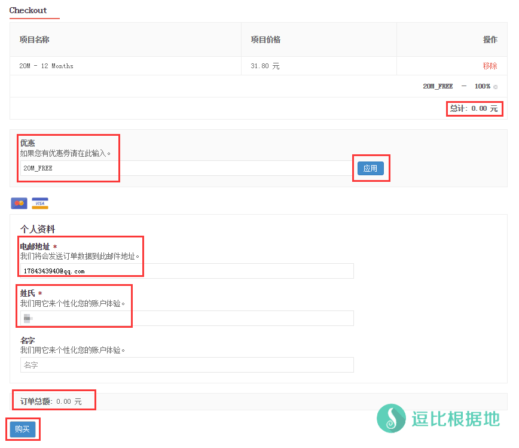
然后就会提示如下信息，订单已完成！
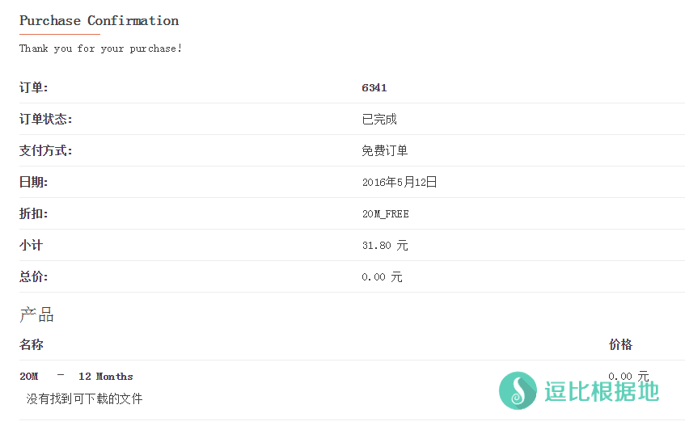
这时候去你上面填写的邮箱，找到他发给你的 授权码，稍后要用到它。
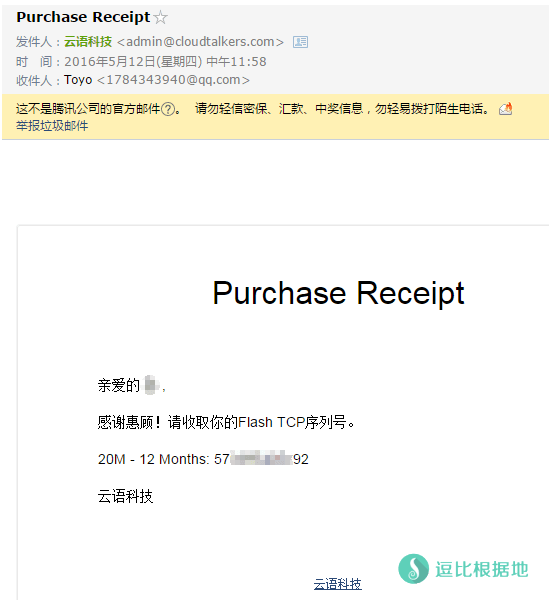
安装步骤
安装Linux系统依赖
不知道怎么登陆VPS？看这个 Linux SSH链接工具 Putty 新手详细使用教程
CentOS系统：
yum install wget dmidecode net-tools psmisc
Ubuntu & Debian系统：
apt-get update apt-get install wget dmidecode psmisc
确定内核是否支持
然后确定你的内核可以安装Flash TCP。
输入 uname -r 命令 ，回车查看返回值，然后去Flash TCP内核列表对照是否有这个内核。
如果没找到那就说明你用不了这个软件，如果有就进行下一步下载安装！
下载Flash TCP
wget -O ./flash_tcp.tar.gz 下载包链接地址
例如Debian 7.0 64位 内核3.2.0.-4-amd64的：
wget -O ./flash_tcp.tar.gz http://flash-tcp-download.oss-cn-qingdao.aliyuncs.com/flash_tcp_x86_64_3.2.0-4-amd64.tar.gz
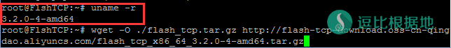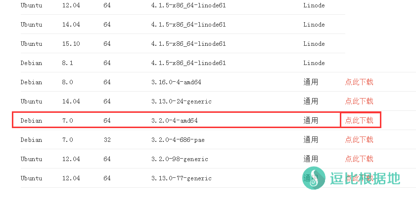
剩下的这些都按照官方的步骤走。
解压Flash TCP安装包
Flash TCP软件包需要安装在 / 目录，请严格按照下面命令进行解压，注意命令大小写。
rm -rf /flash_tcp tar xf flash_tcp.tar.gz -C /
安装并设置Flash TCP开机启动（默认设置）
/flash_tcp/install.sh
提示如下：
Flash TCP installation is starting.
Flash TCP has been installed successfully.
激活Flash TCP授权码
激活Flash TCP授权码命令格式： activate_license.sh <Flash TCP授权码>
例如：
/flash_tcp/activate_license.sh 1111111111111
提示如下：
You don't have any working license right now. [The input license infomation] License code : 1111111111111 Max Bandwidth: 50M Duration : 1 Month Activate Date: 2015-11-05 Exprie Date : 2015-12-05 Please type 'Y/y' to use new license: [y] y //此处输入小写y或者大写Y都可以 License 1111111111111 is activating, please wait a moment. License 1111111111111 activation process succeed.
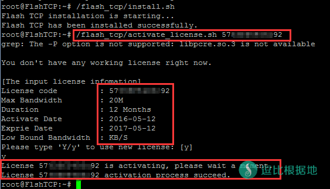
Flash TCP关键参数配置
文件 /flash_tcp/tm_config 保存Flash TCP软件运行相关参数，配置文件为json格式文本文件；
其中 low_bound_bandwidth 参数默认值为512（单位为KB），需要用户根据自己的服务器情况进行修改；
low_bound_bandwidth 参数制定方法简介如下，更多请参考：
1）服务器下行带宽大于512KB/秒（或4Mbps），通常情况保持默认值即可；
2）服务器下行带宽小于512KB/秒（或4Mbps），请将low_bound_bandwidth参数值修改为小于服务器下行带宽的值；
例如：服务器带宽为1Mbps，换算成128KB/秒，则将low_bound_bandwidth的值修改为128即可；
不知道怎么编辑？看这个 Linux中VIM编辑器的真 · 简单使用教程
vi /flash_tcp/tm_config
打开配置文件，显示如下：
{
"lic_code": "1111111111111",
"duration": "1 Month",
"max_bandwidth": "100M",
"activate_date": "2016-01-13",
"expire_date": "2016-02-13",
"low_bound_bandwidth": "512"
}
这里建议修改成2048，具体请参考这里。
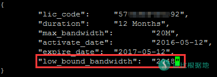
运行Flash TCP软件
/flash_tcp/start.sh
提示如下：
Flash TCP is startting.
Flash TCP has been started successfully.
其他操作
停止Flash TCP软件
/flash_tcp/stop.sh
提示如下：
Flash TCP is stopping.
Flash TCP has been stopped successfully.
查看Flash TCP运行状态
/flash_tcp/status.sh
提示如下：
Flash TCP is running. [Your current working license] License code : 5695fd872a159 Max Bandwidth : 100M Duration : 1 Month Activate Date : 2016-01-13 Exprie Date : 2016-02-13 Low Bound Bandwidth : 512KB/S
卸载Flash TCP软件
/flash_tcp/uninstall.sh
提示如下：
Flash TCP is unistalling…
System Auto-boot function is removing…
System Auto-boot function has been removed.
Kernel Module is removing…
Kernel Module has been removed.
Flash TCP unistallation finished.
测速比较
加速前
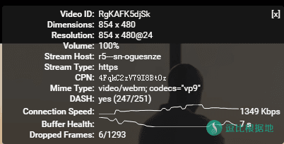
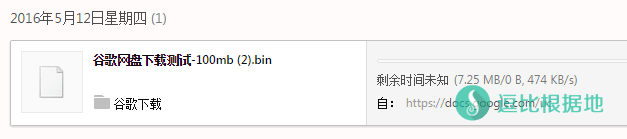
加速后
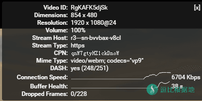
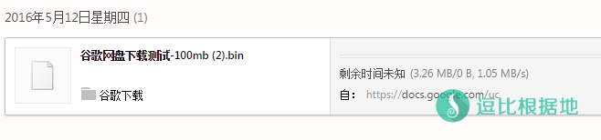
可以看出还是有效果的，个人使用还是可以的，多人的话，20M加速宽带可能就不够分了。
注意：这个加速效果很本地运营商与服务器也是有关系的！
FAQ
Q：Flash TCP是否支持Windows服务器？
A：Flash TCP当前只支持Linux 服务器。
Q：我的Linux系统内核目前没有对应的安装包？
A：Flash TCP已经覆盖CentOS/Ubuntu等主流发行版；您可以选择更换Linux服务器发行版系统，也可以在我们官方网站主页上进行反馈，反馈您当前系统内核版本号，我们会尽快推出相应版本。
Q：我需要重装VPS服务器系统或重装安装Flash TCP，如何保存已经激活的授权码？
A：请参考 重新安装系统或重新安装Flash TCP后如何保留已经激活的License 进行处理。
Q：我的试用授权码到期了，如何使用新购买的授权码？
A：请使用本帮助中的激活授权码命令 /flash_tcp/activate_license.sh <FlashTCP授权码> ，激活新的授权码即可。
其他的优化方案：https://doub.io/ss-jc26/#三、优化Shadowsocks
转载请超链接注明：逗比根据地 » 锐速取消免费后的另一个Linux TCP加速软件——云语（Flash TCP）
责任声明：本站一切资源仅用作交流学习，请勿用作商业或违法行为！如造成任何后果，本站概不负责！